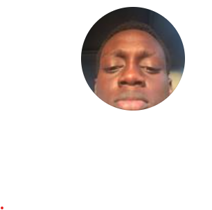

Online Resume

Objective
For basic practice and a means of keeping track of progress in the long run.
Education
- Completed Primary education
- Completed secondary education
- Currently an Undergraduate
- Studying Information Technology(at augustine university)
Skills
A few skills i posses, not to full potential but atleast i know a thing or two.
- Microsoft Excel
- Microsoft powerpoint
- Microsoft Word
- Learning Python programming
- Learning C++ programming
- Learning Web Development
- Friendly Interactions(Customer relation)
I have no work experience,but i am Currently making effort to acquire work experience.